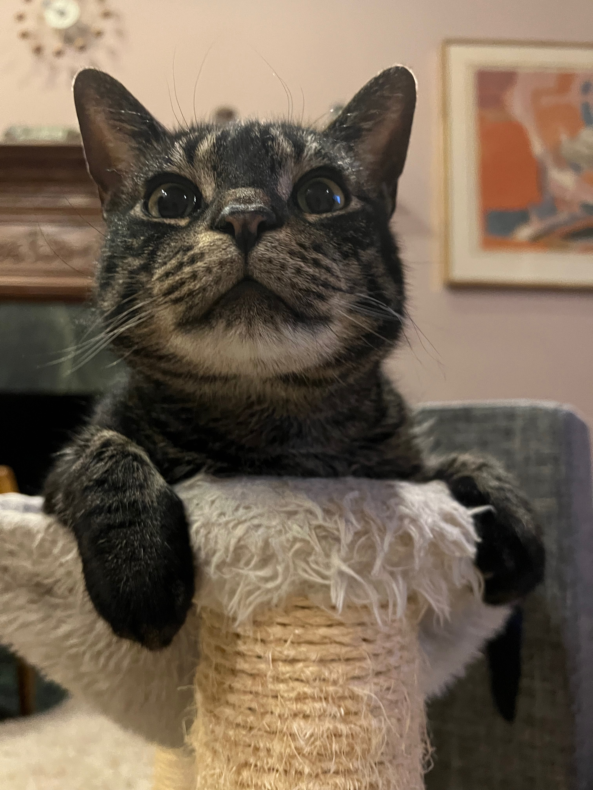
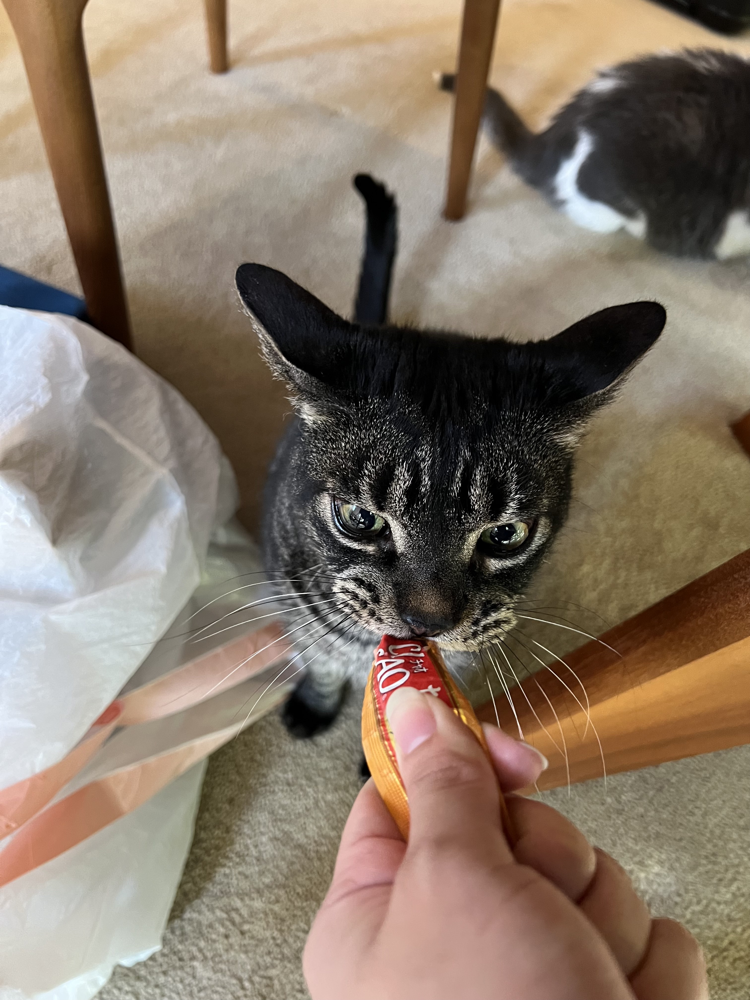
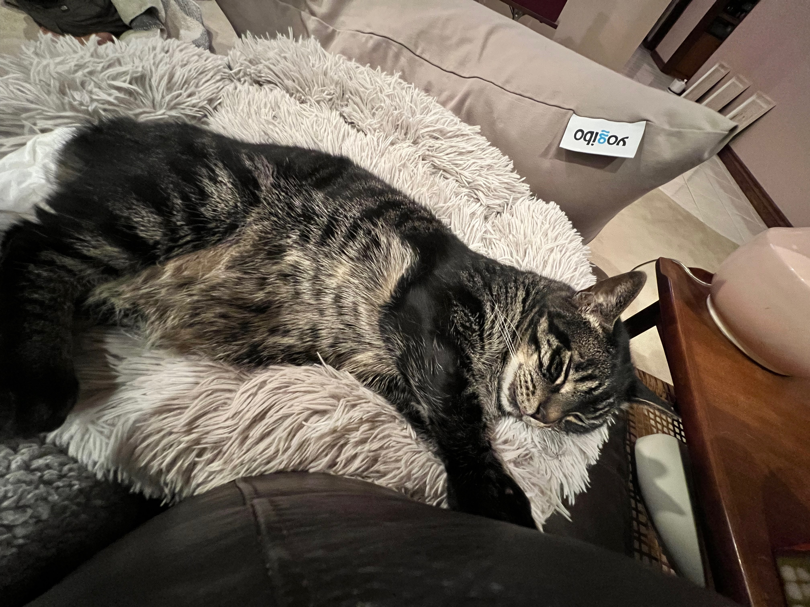
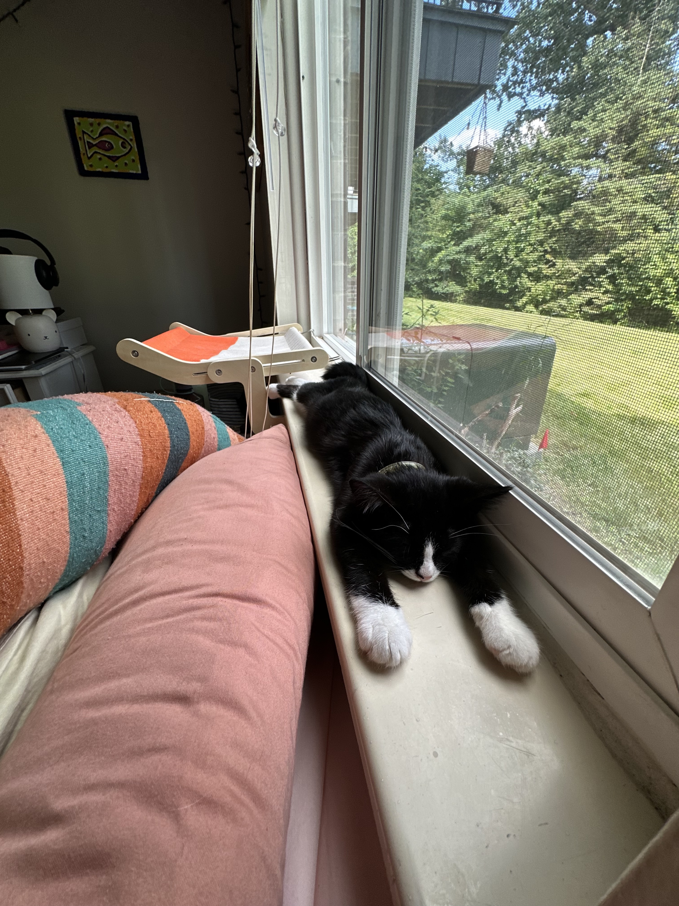
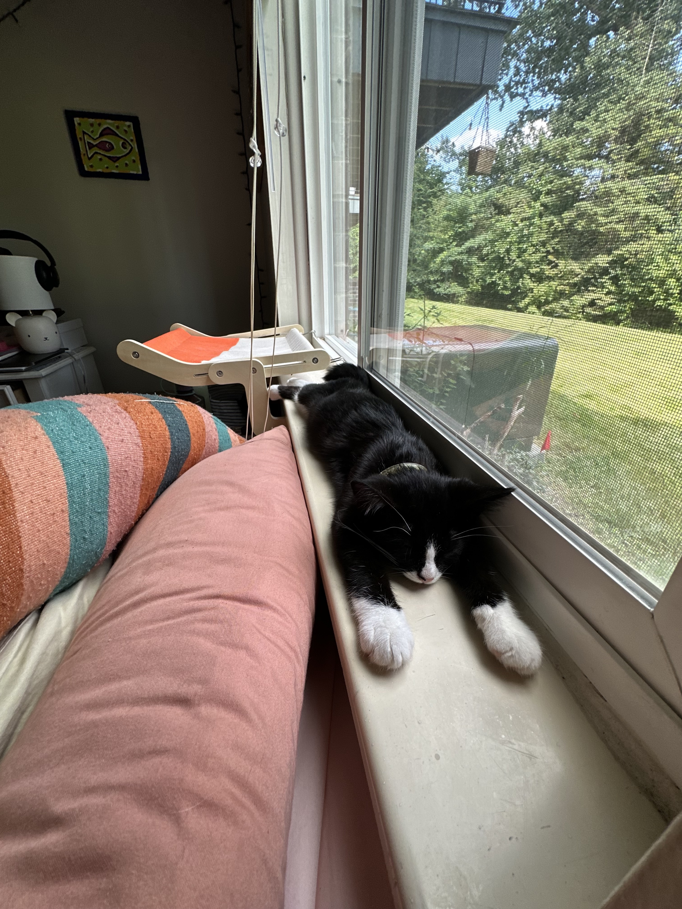

Pets
Nico
Nico is a 5 year old male cat who is shy around strangers but loves his family. He is a lazy cat who loves louging around all day but at the sound of people, he'll disappear to one of this many hiding spots.
Nico loves food. Although he is skinner than his other cat siblings, when food is placed out he'll eat his portion and his siblings. Nico loves treats and even though he is shy, he'll come running out for treats.
Photo Gallery
 

Likes
Jax

Jax is a kitten, about five months old that I found this summer at a gas station while traveling to Marquette, Michigan. He was scared and malnourished, crying in the parking lot. I took him with me and after some healthy meals and a trip to the vet he is doing great!
My roommates and I just recently moved and Jax has been having a hard time getting used to the large house since we were previously living in a small apartment. Jax is incredibly playful and loves to run around, but when he is sleepy he is happy to be held.
Photo Gallery

 
